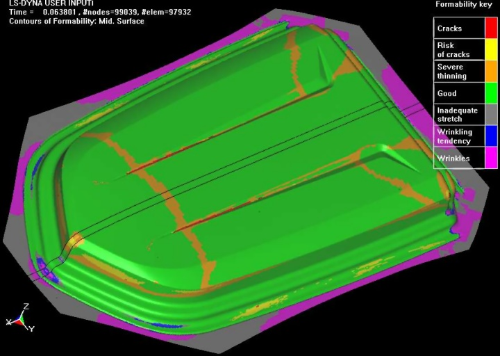
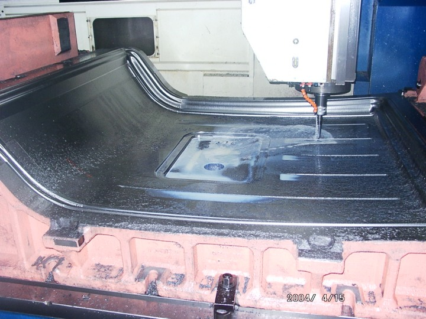
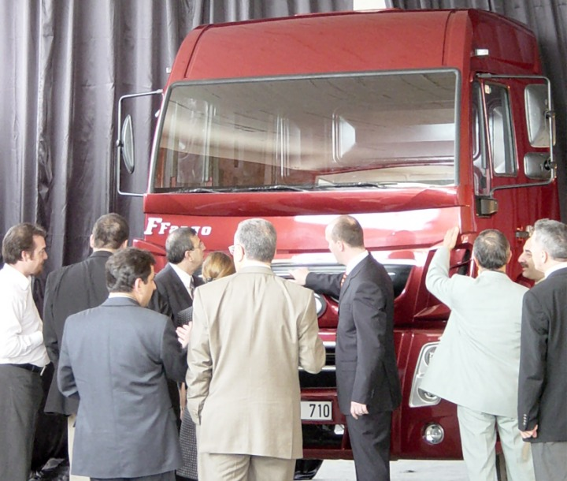
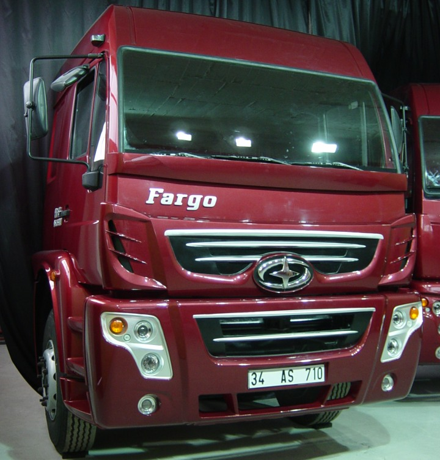

Þoför koltuðunun ve direksiyon yerleþmesinin ergonomik analizleri için
bir çalýþma yapýldý mý?
Erdinç Karaüç: Direksiyon ve yolcu koltuðunda türettiðimiz araçtaki mevcut durumunu aynen koruduðumuzdan yeni bir çalýþma yapma gereði duymadýk. Zaten yeni aracýn gerçekleþtirilmesi için bize 8 ay gibi kýsa bir süre verilmiþ olduðu için buna kaynak da ayýramazdýk.
Halojen lambalý farlar için seçim ve uygulamayý nasýl yaptýnýz?
Erdinç Karaüç: Far veya aydýnlatma elemanlarýnýn tasarýmý ayrý bir uzmanlýk alaný olduðundan Hella firmasýnýn üniversal aydýnlatma elemanlarýný kullandýk, bu elemanlar firma tarafýndan bahsettiðiniz testler yapýlmýþ ve "E" onayý dediðimiz Avrupa Regülasyonlarýna uyumlu olduðu belgelendirilmiþtir (komponent onaylý). Biz aracýn görüþüne uygun olacak þekilde ve AB regülasyonlarýna bahsedilen ölçülerde yerleþtirdik.
Aracýn sac parça kalýplarýnýn tasarým, analiz ve imalatý nasýl yapýldý?
Erdinç Karaüç: ASKAM olarak piyasa araþtýrmalarý ve rakiplerle mukayese yaparak kabin ebatlarýný tespit ettik. Bu veriler doðrultusunda tavan saclarý ve yan panel saclarýnýn yüzey modellerini CATIA'da oluþturduk. Bu datalara göre aðaç model hazýrlayarak sac kabine uyumunun onayýný aldýk.
Daha sonra bu parçalarýn kalýp tasarýmý için Form 2000 A.Þ. ile ortak bir çalýþma baþlattýk. Kendileri LS-DYNA kullanarak sac parçalarýn kalýplanabilirliðini analiz ettiler. Buna göre parçalarýn yüzey datalarý tarafýmýzdan uygun hale getirilerek kalýp tasarýmý son halini aldý. Kalýplarýn CNC tezgahlarla iþleme hizmetini de Form 2000'den aldýk.

LS-DYNA ile Form 2000 A.Þ.'de yapýlan tavan sacý derin çekme simülasyon sonucu.
Not: Bu üç animasyonu avi formatýnda toplu olarak indirmek için týklayýnýz; tavan-sac-form-sim.zip (4MB)

Tavan sacý kalýbý Form 2000 A.Þ.'de CNC freze tezgahýnda iþeniyor.
Aracýn piyasaya çýkabilmesi için çarpýþma, devrilme vb. hesaplarýnýn veya testlerin yapýlmasý gerekti mi?
Erdinç Karaüç: Ülkemizde çarpma ve devrilme gibi testleri ihtiva eden AB regülasyonlarý zorunluluðu olmadýðýndan, ayrýca yeni modeli, gerekli testleri zaten saðlamýþ mevcut bir araçtan türettiðimiz için buna gerek duymadýk. Sýfýrdan kabin tasarýmý yapýlýrsa sonlu elemanlar ve testler yapmak mutlaka gerekecektir.
Hava filtresi üzerindeki büyük logonuz da göze çarpýyor. Bu hava filtresini kim tasarladý? Tasarýmda nelere dikkat edildi?
Erdinç Karaüç: Hava filtresi aracýn motor ve yürüyen aksamýndan sorumlu olan Þasi ve Motor Aksamý Bölümü tarafýndan gerçekleþtirilmiþtir. Burada esas alýnan, türettiðimiz aracýn hava filtresinin (Bu parça baca olarak adlandýrýlýr ve þasinin yan tarafýnda bulunan filtreye hava giriþini saðlar) kesitleri örnek alýnarak ve motor üzerinden sensörler vasýtasý ile hava direncinin ölçülmesi yolu ile gerekli düzeltmeler yapýlarak gerçekleþtirilmiþtir.
Tasarýmlarýnýzý korumak için hukuki önlemler aldýnýz mý?
Erdinç Karaüç: Evet, yeni tasarlanan parçalarý ve model ismini, baþkalarý tarafýndan kullanýlmasýný önlemek için Türk Patent Enstitüsü'ne tescil ettirdik. Tabii bu yedek parçalar için de geçerlidir.
Seri imalata geçilecek model için kararý nasýl verdiniz?
Erdinç Karaüç: Kararý çok zor verdik. Yaklaþýk 40 yýllýk bir firmayýz ve Amerikan tarzý ve muhafazakar bir anlayýþ aðýr basmaktaydý. Ama Patronumuz Sayýn Hakan Çiftçi bir otomotiv tutkunu, farklýlýk peþinde koþan bir insandýr. Burada yenilikçilerle gelenekçiler arasýnda tatlý bir rekabet oldu. Ýki tarafý da ikna ettik. Hakan Ertem Bey aracýn uzaktan nasýl daha iyi görünebileceði ve olmasý gereken dýþ görünüþü konusunda yönetimi ikna etmek için konu hakkýnda detaylý bir bilgi sundu. Böyle bir ikna yöntemleri oldu. Büyük bir çoðunluðu þu andaki aracý beðendi.
Karar safhasýnda bayilerinizle bir toplantý yaptýnýz mý? Onlardan bilgi aldýnýz mý?
Erdinç Karaüç: Karar safhasýnda projenin gizliliði açýsýndan bayilerimizle böyle bir çalýþma yapamazdýk. Zaten daha önce ASKAM Geleceðe Bakýþ Toplantýlarý'nda "Müþterilerimiz ne istiyor? Neden þikayet ediyor?" diye bayilerimizden elde ettiðimiz bilgiler mevcuttu. Ýki modelin gerçek ölçekli prototipini imal ettik. Satýþ grubuyla üst yönetim bu prototipleri gördü. Sonuçta onlar birine karar verdiler.

Satýþ grubu ve üst yönetim ilk prototipleri incelerken.

Ýlk iki prototip içinden bu model seri imalat için uygun görüldü